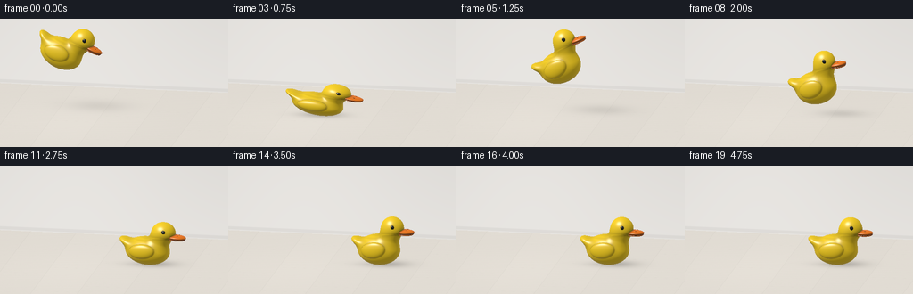
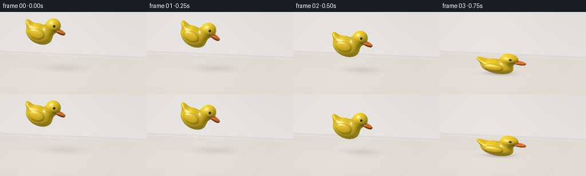

CODING AGENTS AS PIXEL WORLD MODELS
traex/GPT-6.1-Sol · mechanics_0037
点击播放 · 原生 RGB 像素
逐轮保存的候选
回放视频、检查图与代码变化。
每份候选均可单独播放。实际图片检查记录在下方工具轨迹中。
候选 01播放与检查图
点击播放 · 原生 RGB 像素


展开代码变化
--- 上一保存版本
+++ 本次保存版本
@@ -0,0 +1,191 @@
+"""Procedural rubber-duck animation: NumPy SDF ray casting, no external renderer."""
+from pathlib import Path
+import json, math
+import numpy as np
+from PIL import Image
+import artifact_io
+
+ROOT=Path(__file__).resolve().parent
+SPEC=json.loads((ROOT/'task_spec.json').read_text())
+W,H=SPEC['width'],SPEC['height']
+SS=2
+WW,HH=W*SS,H*SS
+SCALE=37.0*SS
+
+def norm(v):
+ return v/np.maximum(np.linalg.norm(v,axis=-1,keepdims=True),1.e-9)
+F=norm(np.array([.18,.25,1.0]))
+RIGHT=norm(np.cross([0.,1.,0.],F)); UP=np.cross(F,RIGHT)
+VIEW=F
+LIGHT=norm(np.array([-.48,.83,.56]))
+HALF=norm(LIGHT+VIEW)
+Y,X=np.mgrid[:HH,:WW]
+O=(RIGHT[None,None,:]*((X-WW/2)/SCALE)[...,None]+UP[None,None,:]*((HH/2-Y)/SCALE)[...,None]+np.array([0,1.04,0])+8*F).astype(np.float32)
+D=(-F).astype(np.float32)
+
+# A continuous, sculpted silhouette, not a collection of separate spheres.
+PARTS=[
+ (np.array([-.07,.49,0]),np.array([.67,.47,.45]),0.),
+ (np.array([.28,.87,0]),np.array([.295,.365,.29]),0.),
+ (np.array([.39,1.17,0]),np.array([.355,.345,.318]),0.),
+ (np.array([-.64,.68,0]),np.array([.32,.135,.255]),-.45),
+]
+
+def ellipse(p,c,r,ang=0.):
+ q=p-c
+ if ang:
+ co,si=np.cos(ang),np.sin(ang)
+ q=np.stack([co*q[:,0]+si*q[:,1],-si*q[:,0]+co*q[:,1],q[:,2]],axis=1)
+ k0=np.linalg.norm(q/r,axis=1)
+ k1=np.linalg.norm(q/(r*r),axis=1)
+ return k0*(k0-1)/np.maximum(k1,1.e-7)
+
+def smin(a,b,k):
+ h=np.maximum(k-np.abs(a-b),0)/k
+ return np.minimum(a,b)-h*h*k*.25
+
+EXTRAS=[
+ # Two plump rounded lips separated by an extremely fine bill crease.
+ (np.array([.784,1.065,0]),np.array([.298,.076,.217]),2),
+ (np.array([.778,1.001,0]),np.array([.274,.039,.205]),2),
+ (np.array([.811,1.018,0]),np.array([.256,.012,.209]),3),
+ # Raised glossy black eyes on both sides of the head.
+ (np.array([.481,1.250,.289]),np.array([.058,.060,.032]),1),
+ (np.array([.481,1.250,-.289]),np.array([.058,.060,.032]),1),
+ # Tiny dimples in the top of the bill.
+ (np.array([.854,1.131,.096]),np.array([.021,.007,.014]),3),
+ (np.array([.854,1.131,-.096]),np.array([.021,.007,.014]),3),
+]
+
+def field(p,material=False):
+ d=ellipse(p,*PARTS[0])
+ for part in PARTS[1:]: d=smin(d,ellipse(p,*part),.15)
+ # The wings merge into the body with a molded, curved rim.
+ for side in [-1,1]:
+ d=smin(d,ellipse(p,np.array([-.12,.54,side*.404]),np.array([.385,.238,.102]),.16),.025)
+ if material: mat=np.zeros(len(p),np.int8)
+ for c,r,m in EXTRAS:
+ e=ellipse(p,c,r)
+ if material: mat=np.where(e<d,m,mat)
+ d=np.minimum(e,d)
+ return (d,mat) if material else d
+
+# Pixel ray coordinates are constant; floor texture remains perfectly stationary.
+tf=-O[:,:,1]/D[1]
+PF=O+tf[...,None]*D
+wallz=-3.55
+tw=(wallz-O[:,:,2])/D[2]
+PW=O+tw[...,None]*D
+isfloor=tf<tw
+rng=np.random.default_rng(812)
+noise=rng.normal(0,.0018,(HH,WW))
+walltone=.76+.052*np.exp(-((PW[:,:,0]+1.8)**2+(PW[:,:,1]-2.4)**2)/10)-.018*PW[:,:,1]
+wall=np.stack([walltone*1.025,walltone,walltone*.963],axis=-1)
+fx,fz=PF[:,:,0],PF[:,:,2]
+# Desaturated oak planks: understated grain and thin believable floor joints.
+boards=np.floor((fx+.42)/1.4)
+grain=np.sin(fz*29+np.sin(fz*2.3+boards*4)*1.1+fx*4)*.0035+np.sin(fz*72+fx*14)*.0015
+var=np.sin(boards*17.17)*.008
+floorbase=.71+.025*np.exp(-((fx+1.3)**2+(fz-1.0)**2)/8)+grain+var+noise
+joint_x=np.abs(np.mod(fx+.42+.7,1.4)-.7)
+end=np.abs(np.mod(fz+boards*.83+1.5,3)-1.5)
+lines=np.exp(-(joint_x/.009)**2)*.042+np.exp(-(end/.009)**2)*.023
+floorbase-=lines
+floor=np.stack([floorbase*1.065,floorbase*1.01,floorbase*.925],axis=-1)
+# An unobtrusive cove/baseboard at the back of the room.
+baseboard=np.exp(-((PW[:,:,1]-.075)/.052)**8)
+wall=wall*(1-baseboard[...,None]*.09)
+background=np.where(isfloor[...,None],floor,wall)
+
+# Contact frames are intentionally sampled at 4 fps, with big readable rebounds.
+heights=[1.39,1.26,.81,0,.77,.99,.73,0,.39,0,.19,0,.07,0,0,0,0,0,0,0]
+xs=[-1.78,-1.46,-1.10,-.74,-.39,-.05,.26,.51,.71,.86,.98,1.07,1.14,1.18,1.20,1.21,1.21,1.21,1.21,1.21]
+angles=[-24,-31,-23,-9,18,24,11,-7,13,-5,8,-3,4,-2,1.6,-1,.5,-.3,.1,0]
+squashes=[1,1,1,.70,1.10,1.04,1,.79,1.07,.86,1.05,.92,1.02,.96,1.01,.985,1.005,1,1,1]
+
+
+def render(i):
+ h=heights[i]; squash=squashes[i]
+ widen=1/math.sqrt(squash)
+ a=math.radians(angles[i]); yaw=math.radians(-7+3*math.sin(i*.39))
+ rz=np.array([[math.cos(a),-math.sin(a),0],[math.sin(a),math.cos(a),0],[0,0,1]])
+ ry=np.array([[math.cos(yaw),0,math.sin(yaw)],[0,1,0],[-math.sin(yaw),0,math.cos(yaw)]])
+ A=rz@np.diag([widen,squash,widen])@ry
+ inv=np.linalg.inv(A)
+ # Exact lower support of the ellipsoids anchors compression to the floor.
+ lower=1e3
+ for c,r,ang in PARTS:
+ re=np.array([[math.cos(ang),-math.sin(ang),0],[math.sin(ang),math.cos(ang),0],[0,0,1]])
+ lower=min(lower,(A@c)[1]-np.linalg.norm((A@re)[1]*r))
+ translate=np.array([xs[i],h-lower+.014,0])
+ # Soft directional area-light shadow, broad in flight and tight on contact.
+ shadowheight=h+.43*squash
+ sx=xs[i]-LIGHT[0]/LIGHT[1]*shadowheight
+ sz=-LIGHT[2]/LIGHT[1]*shadowheight
+ sigx=.42+.18*h; sigz=.28+.16*h
+ broad=np.exp(-.5*((fx-sx)/sigx)**2-.5*((fz-sz)/sigz)**2)
+ contact=np.exp(-.5*((fx-xs[i])/.49)**2-.5*(fz/.24)**2)*math.exp(-h*8)
+ shadow=np.minimum(.46,broad*(.24/(1+.45*h))+.22*contact)
+ image=background*(1-np.where(isfloor,shadow,0)[...,None])
+ # Ray tracing only inside the duck's bounding sphere is inexpensive.
+ center=translate+A@np.array([.05,.72,0])
+ oc=O.reshape(-1,3)-center
+ b=oc@D; c=np.einsum('ij,ij->i',oc,oc)-1.29**2
+ disc=b*b-c
+ ids=np.flatnonzero(disc>0)
+ t=(-b[ids]-np.sqrt(disc[ids])).astype(np.float32)
+ tend=-b[ids]+np.sqrt(disc[ids])
+ origins=O.reshape(-1,3)[ids]
+ local_o=(origins-translate)@inv.T
+ local_d=D@inv.T
+ hit=np.zeros(len(ids),bool); active=np.arange(len(ids))
+ for step in range(115):
+ if len(active)==0: break
+ p=local_o[active]+t[active,None]*local_d
+ dist=field(p)*min(squash,widen)
+ near=dist<.00125
+ hit[active[near]]=True
+ still=(~near)&(t[active]<tend[active])
+ todo=active[still]
+ t[todo]+=np.maximum(dist[still]*.82,.0006)
+ active=todo
+ j=np.flatnonzero(hit)
+ p=local_o[j]+t[j,None]*local_d
+ _,mat=field(p,True)
+ eps=.0015
+ grads=[]
+ for axis in range(3):
+ delta=np.zeros(3); delta[axis]=eps
+ grads.append(field(p+delta)-field(p-delta))
+ n=norm(np.stack(grads,axis=-1)@inv)
+ nl=np.maximum(n@LIGHT,0)
+ fill=np.maximum(n@norm(np.array([.8,.1,-.6])),0)
+ sky=.285+.055*n[:,1]
+ # Local occlusion where the neck, wing, and bill meet.
+ local_normal=norm(np.stack(grads,axis=-1))
+ ao=np.ones(len(p))
+ for distance,weight in [(.045,.6),(.12,.24),(.25,.11)]:
+ ao-=np.maximum(distance-field(p+local_normal*distance),0)/distance*weight
+ ao=np.clip(ao,.48,1)
+ intensity=(sky+.65*nl+.12*fill)*ao
+ palette=np.array([[1.,.69,.015],[.008,.012,.012],[1.,.235,.012],[.21,.052,.009]])
+ rgb=palette[mat]*intensity[:,None]
+ nh=np.maximum(n@HALF,0)
+ rough=np.where(mat==1,150.,75.)
+ spec=(nh**rough)*np.where(mat==1,1.5,.58)+(nh**13)*.052
+ # Clean molded rubber specular, with a softer rim reflection.
+ fresnel=(1-np.maximum(n@VIEW,0))**4
+ rgb+=spec[:,None]*np.array([1.,.96,.87])+fresnel[:,None]*.07*np.array([.86,.90,1.])
+ image.reshape(-1,3)[ids[j]]=rgb
+ # Tone-map from linear light and antialias in the final RGB frame.
+ image=np.clip(image,0,1)**(1/2.2)
+ im=Image.fromarray((image*255+.5).astype(np.uint8))
+ return np.asarray(im.resize((W,H),Image.Resampling.LANCZOS))
+
+if __name__=='__main__':
+ frames=[]
+ for i in range(SPEC['frames']):
+ frames.append(render(i))
+ print(f'Rendered {i+1}/{SPEC["frames"]}',flush=True)
+ artifact_io.save(np.stack(frames).astype(np.uint8),ROOT)
+ print('Saved RGB frames, pixels.npz, and index.html.',flush=True)
可观测工具轨迹
实际执行的命令与返回图片。
命令 1exit 0
/bin/bash -lc 'ls -la && cat prompt.txt && cat GENERATION_RULES.md && cat task_spec.json'
命令 2exit 0
/bin/bash -lc 'cat artifact_io.py'
命令 3exit 0
/bin/bash -lc "python - <<'PY'
import numpy,PIL
print('numpy',numpy.__version__)
PY"命令 4exit 0
/bin/bash -lc "cat > generate.py <<'PY'
\"\"\"Procedural rubber-duck animation: NumPy SDF ray casting, no external renderer.\"\"\"
from pathlib import Path
import json, math
import numpy as np
from PIL import Image
import artifact_io
ROOT=Path(__file__).resolve().parent
SPEC=json.loads((ROOT/'task_spec.json').read_text())
W,H=SPEC['width'],SPEC['height']
SS=2
WW,HH=W*SS,H*SS
SCALE=37.0*SS
def norm(v):
return v/np.maximum(np.linalg.norm(v,axis=-1,keepdims=True),1.e-9)
F=norm(np.array([.18,.25,1.0]))
RIGHT=norm(np.cross([0.,1.,0.],F)); UP=np.cross(F,RIGHT)
VIEW=F
LIGHT=norm(np.array([-.48,.83,.56]))
HALF=norm(LIGHT+VIEW)
Y,X=np.mgrid[:HH,:WW]
O=(RIGHT[None,None,:]*((X-WW/2)/SCALE)[...,None]+UP[None,None,:]*((HH/2-Y)/SCALE)[...,None]+np.array([0,1.04,0])+8*F).astype(np.float32)
D=(-F).astype(np.float32)
# A continuous, sculpted silhouette, not a collection of separate spheres.
PARTS=[
(np.array([-.07,.49,0]),np.array([.67,.47,.45]),0.),
(np.array([.28,.87,0]),np.array([.295,.365,.29]),0.),
(np.array([.39,1.17,0]),np.array([.355,.345,.318]),0.),
(np.array([-.64,.68,0]),np.array([.32,.135,.255]),-.45),
]
def ellipse(p,c,r,ang=0.):
q=p-c
if ang:
co,si=np.cos(ang),np.sin(ang)
q=np.stack([co*q[:,0]+si*q[:,1],-si*q[:,0]+co*q[:,1],q[:,2]],axis=1)
k0=np.linalg.norm(q/r,axis=1)
k1=np.linalg.norm(q/(r*r),axis=1)
return k0*(k0-1)/np.maximum(k1,1.e-7)
def smin(a,b,k):
h=np.maximum(k-np.abs(a-b),0)/k
return np.minimum(a,b)-h*h*k*.25
EXTRAS=[
# Two plump rounded lips separated by an extremely fine bill crease.
(np.array([.784,1.065,0]),np.array([.298,.076,.217]),2),
(np.array([.778,1.001,0]),np.array([.274,.039,.205]),2),
(np.array([.811,1.018,0]),np.array([.256,.012,.209]),3),
# Raised glossy black eyes on both sides of the head.
(np.array([.481,1.250,.289]),np.array([.058,.060,.032]),1),
(np.array([.481,1.250,-.289]),np.array([.058,.060,.032]),1),
# Tiny dimples in the top of the bill.
(np.array([.854,1.131,.096]),np.array([.021,.007,.014]),3),
(np.array([.854,1.131,-.096]),np.array([.021,.007,.014]),3),
]
def field(p,material=False):
d=ellipse(p,*PARTS[0])
for part in PARTS[1:]: d=smin(d,ellipse(p,*part),.15)
# The wings merge into the body with a molded, curved rim.
for side in [-1,1]:
d=smin(d,ellipse(p,np.array([-.12,.54,side*.404]),np.array([.385,.238,.102]),.16),.025)
if material: mat=np.zeros(len(p),np.int8)
for c,r,m in EXTRAS:
e=ellipse(p,c,r)
if material: mat=np.where(e<d,m,mat)
d=np.minimum(e,d)
return (d,mat) if material else d
# Pixel ray coordinates are constant; floor texture remains perfectly stationary.
tf=-O[:,:,1]/D[1]
PF=O+tf[...,None]*D
wallz=-3.55
tw=(wallz-O[:,:,2])/D[2]
PW=O+tw[...,None]*D
isfloor=tf<tw
rng=np.random.default_rng(812)
noise=rng.normal(0,.0018,(HH,WW))
walltone=.76+.052*np.exp(-((PW[:,:,0]+1.8)**2+(PW[:,:,1]-2.4)**2)/10)-.018*PW[:,:,1]
wall=np.stack([walltone*1.025,walltone,walltone*.963],axis=-1)
fx,fz=PF[:,:,0],PF[:,:,2]
# Desaturated oak planks: understated grain and thin believable floor joints.
boards=np.floor((fx+.42)/1.4)
grain=np.sin(fz*29+np.sin(fz*2.3+boards*4)*1.1+fx*4)*.0035+np.sin(fz*72+fx*14)*.0015
var=np.sin(boards*17.17)*.008
floorbase=.71+.025*np.exp(-((fx+1.3)**2+(fz-1.0)**2)/8)+grain+var+noise
joint_x=np.abs(np.mod(fx+.42+.7,1.4)-.7)
end=np.abs(np.mod(fz+boards*.83+1.5,3)-1.5)
lines=np.exp(-(joint_x/.009)**2)*.042+np.exp(-(end/.009)**2)*.023
floorbase-=lines
floor=np.stack([floorbase*1.065,floorbase*1.01,floorbase*.925],axis=-1)
# An unobtrusive cove/baseboard at the back of the room.
baseboard=np.exp(-((PW[:,:,1]-.075)/.052)**8)
wall=wall*(1-baseboard[...,None]*.09)
background=np.where(isfloor[...,None],floor,wall)
# Contact frames are intentionally sampled at 4 fps, with big readable rebounds.
heights=[1.39,1.26,.81,0,.77,.99,.73,0,.39,0,.19,0,.07,0,0,0,0,0,0,0]
xs=[-1.78,-1.46,-1.10,-.74,-.39,-.05,.26,.51,.71,.86,.98,1.07,1.14,1.18,1.20,1.21,1.21,1.21,1.21,1.21]
angles=[-24,-31,-23,-9,18,24,11,-7,13,-5,8,-3,4,-2,1.6,-1,.5,-.3,.1,0]
squashes=[1,1,1,.70,1.10,1.04,1,.79,1.07,.86,1.05,.92,1.02,.96,1.01,.985,1.005,1,1,1]
def render(i):
h=heights[i]; squash=squashes[i]
widen=1/math.sqrt(squash)
a=math.radians(angles[i]); yaw=math.radians(-7+3*math.sin(i*.39))
rz=np.array([[math.cos(a),-math.sin(a),0],[math.sin(a),math.cos(a),0],[0,0,1]])
ry=np.array([[math.cos(yaw),0,math.sin(yaw)],[0,1,0],[-math.sin(yaw),0,math.cos(yaw)]])
A=rz@np.diag([widen,squash,widen])@ry
inv=np.linalg.inv(A)
# Exact lower support of the ellipsoids anchors compression to the floor.
lower=1e3
for c,r,ang in PARTS:
re=np.array([[math.cos(ang),-math.sin(ang),0],[math.sin(ang),math.cos(ang),0],[0,0,1]])
lower=min(lower,(A@c)[1]-np.linalg.norm((A@re)[1]*r))
translate=np.array([xs[i],h-lower+.014,0])
# Soft directional area-light shadow, broad in flight and tight on contact.
shadowheight=h+.43*squash
sx=xs[i]-LIGHT[0]/LIGHT[1]*shadowheight
sz=-LIGHT[2]/LIGHT[1]*shadowheight
sigx=.42+.18*h; sigz=.28+.16*h
broad=np.exp(-.5*((fx-sx)/sigx)**2-.5*((fz-sz)/sigz)**2)
contact=np.exp(-.5*((fx-xs[i])/.49)**2-.5*(fz/.24)**2)*math.exp(-h*8)
shadow=np.minimum(.46,broad*(.24/(1+.45*h))+.22*contact)
image=background*(1-np.where(isfloor,shadow,0)[...,None])
# Ray tracing only inside the duck's bounding sphere is inexpensive.
center=translate+A@np.array([.05,.72,0])
oc=O.reshape(-1,3)-center
b=oc@D; c=np.einsum('ij,ij->i',oc,oc)-1.29**2
disc=b*b-c
ids=np.flatnonzero(disc>0)
t=(-b[ids]-np.sqrt(disc[ids])).astype(np.float32)
tend=-b[ids]+np.sqrt(disc[ids])
origins=O.reshape(-1,3)[ids]
local_o=(origins-translate)@inv.T
local_d=D@inv.T
hit=np.zeros(len(ids),bool); active=np.arange(len(ids))
for step in range(115):
if len(active)==0: break
p=local_o[active]+t[active,None]*local_d
dist=field(p)*min(squash,widen)
near=dist<.00125
hit[active[near]]=True
still=(~near)&(t[active]<tend[active])
todo=active[still]
t[todo]+=np.maximum(dist[still]*.82,.0006)
active=todo
j=np.flatnonzero(hit)
p=local_o[j]+t[j,None]*local_d
_,mat=field(p,True)
eps=.0015
grads=[]
for axis in range(3):
delta=np.zeros(3); delta[axis]=eps
grads.append(field(p+delta)-field(p-delta))
n=norm(np.stack(grads,axis=-1)@inv)
nl=np.maximum(n@LIGHT,0)
fill=np.maximum(n@norm(np.array([.8,.1,-.6])),0)
sky=.285+.055*n[:,1]
# Local occlusion where the neck, wing, and bill meet.
local_normal=norm(np.stack(grads,axis=-1))
ao=np.ones(len(p))
for distance,weight in [(.045,.6),(.12,.24),(.25,.11)]:
ao-=np.maximum(distance-field(p+local_normal*distance),0)/distance*weight
ao=np.clip(ao,.48,1)
intensity=(sky+.65*nl+.12*fill)*ao
palette=np.array([[1.,.69,.015],[.008,.012,.012],[1.,.235,.012],[.21,.052,.009]])
rgb=palette[mat]*intensity[:,None]
nh=np.maximum(n@HALF,0)
rough=np.where(mat==1,150.,75.)
spec=(nh**rough)*np.where(mat==1,1.5,.58)+(nh**13)*.052
# Clean molded rubber specular, with a softer rim reflection.
fresnel=(1-np.maximum(n@VIEW,0))**4
rgb+=spec[:,None]*np.array([1.,.96,.87])+fresnel[:,None]*.07*np.array([.86,.90,1.])
image.reshape(-1,3)[ids[j]]=rgb
# Tone-map from linear light and antialias in the final RGB frame.
image=np.clip(image,0,1)**(1/2.2)
im=Image.fromarray((image*255+.5).astype(np.uint8))
return np.asarray(im.resize((W,H),Image.Resampling.LANCZOS))
if __name__=='__main__':
frames=[]
for i in range(SPEC['frames']):
frames.append(render(i))
print(f'Rendered {i+1}/{SPEC[\"frames\"]}',flush=True)
artifact_io.save(np.stack(frames).astype(np.uint8),ROOT)
print('Saved RGB frames, pixels.npz, and index.html.',flush=True)
PY
OPENBLAS_NUM_THREADS=1 python generate.py"命令 5exit 0
/bin/bash -lc "python - <<'PY'
from pathlib import Path
import numpy as np
from PIL import Image
p=np.load('pixels.npz')['pixels']
assert p.shape==(144,256,20)
for i in [0,3,5,7,9,19]:
a=np.array(Image.open(f'frames/{i:02}.png'))
m=(a[:,:,0]>a[:,:,2]*1.4)&(a[:,:,1]>a[:,:,2]*1.15)&(a[:,:,0]>150)
yy,xx=np.where(m)
print(i, 'duck bbox', (xx.min(),yy.min(),xx.max(),yy.max()),'pixels',len(xx))
print('Artifacts:',*[str(f) for f in [Path('generate.py'),Path('pixels.npz'),Path('index.html')] if f.exists()])
PY"保存候选 1 份；完成命令 5 次；可验证图片返回 0 张。原始 API 响应与完整日志保留在本地。